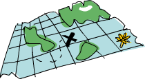

고차원 함수
하스켈에서 함수들은 인자로 함수를 받거나 반환 값으로 함수를 반환하는 것이 가능합니다. 이처럼 함수를 인자로 받거나 반환하는 함수를 고차원 함수(higher order function)라고 부르죠. 이런 고차원 함수는 하스켈에서 굉장히 자주 등장하고 아주 중요합니다. 절차형 언어들처럼 변수에 저장된 값 등의 상태를 변경하는 일련의 단계나 루프를 정의하는 식으로 문제를 어떻게 해결할 지를 고민하는 것이 아니라 풀고자 하는 문제가 무엇인지를 고민하고자 한다면 고차원 함수는 필수 불가결한 개념입니다. 고차원 함수는 문제를 해결하고 프로그램에 대해 고민하는 아주 강력한 방법입니다. [[They're a really powerful way of solving problems and thinking about programs.]](이게 뭔소리여..)
커리 함수
하스켈의 모든 함수는 공식적으로는 단 하나의 인자만 받습니다. 하지만 여태까지 여러 개의 인자를 받는 함수를 잘 만들고 사용해 왔습니다. 어떻게 된 일일까요? 여기엔 아주 영리한 트릭이 숨어 있습니다. 여러 개의 인자를 받는 함수는 모두 커리 함수(curried function)이었습니다. 커리 함수를 이해하기 위해 max 함수를 예로 들어 봅시다. 겉보기에 이 함수는 두 개의 인자를 받고, 그 중 큰 값을 반환하는 것처럼 보입니다. 하지만 실제로는 max 4 5를 실행하면 max 4가 먼저 실행되고, 그 결과로 하나의 인자를 받아서 4와 비교해 큰 값을 반환하는 함수가 반환되고, 이렇게 만들어진 함수에 5가 적용되어 최종 결과가 나오게 됩니다. 조금 장황하고 복잡하게 들리지만 알고보면 아주 멋진 개념입니다. 아래의 두 함수 호출은 완전히 동일한 의미입니다.

두 개의 식 사이에 공백을 주는 것은 그냥 함수 실행일 뿐입니다. 그래서 이 공백은 가장 높은 우선순위를 갖는 일종의 연산자라고도 할 수 있습니다. max의 타입을 찬찬히 살펴봅시다. max :: (Ord a) => a -> a -> a군요. 이 타입은 max :: (Ord a) => a -> (a -> a) 라고도 쓸 수 있습니다. 이 타입을 꼼꼼히 읽어보면, max는 a를 받아 함수를 반환(->가 의미하는 바에 따라)하고, 여기서 반환된 함수는 a를 받아 a를 반환하는 함수임을 나타내고 있습니다. 그래서 하스켈의 타입 식은 다른 언어들에서처럼 콤마 등이 등장하지 않고 간단하게 화살표로만 구분되어 표시될 수 있는 것입니다.
그런데 이게 무슨 도움이 될까요? 만약 함수에 정의된 것보다 적은 수의 인자만 주고 함수를 실행시키면 부분적으로 실행된(partially applied) 함수, 즉 남은 인자를 추가로 받아서 계산을 완료할 수 있는 함수가 반환됩니다. 이런 특징을 이용하면 다른 함수에 전해주거나 데이터를 수정할 함수를 즉석에서 만들 수 있습니다.
엄청나게 간단한 함수가 하나 있습니다.
multThree 3 5 9 나 ((multThree 3) 5) 9 를 실행하면 무슨 일이 벌어질까요? 우선, 3 이 multThree에 전달되어 실행됩니다(공백으로 구분되어 있기 때문에). 그러면 하나의 인자를 받아 함수를 반환하는 함수가 만들어지겠죠. 그 함수에는 5가 적용되어 실행되고, 그 결과로 인자를 하나 받아 15와 곱해 반환하는 함수가 만들어집니다. 마지막으로 9 가 함수에 적용되면 135의 결과가 나오게 됩니다. 이 함수의 타입은 multThree :: (Num a) => a -> (a -> (a -> a))임을 기억하세요. -> 앞에 나오는 것은 함수가 받을 인자이고, 뒤에 나오는 것은 함수가 반환하는 값입니다. 즉, multThree 함수는 a 타입의 값을 받아 (Num a) => a -> (a -> a) 타입의 함수를 반환하는 함수인 것입니다. 비슷한 방식으로 이 함수는 a를 받아 (Num a) => a -> a 타입의 함수를 반환하게 됩니다. 마찬가지로 이 함수는 a를 받아 a를 반환합니다. 다음 코드를 보시죠.
인자를 3개 받는 함수에 인자를 그보다 적은 1개 혹은 2개만 주면 그 자체로 새로운 함수가 만들어집니다. 만약 숫자를 하나 받아 100과 비교하는 함수를 만들고자 한다면 이렇게 할 수 있습니다.
이 함수를 99라는 값을 주어 호출하면, GT가 반환됩니다. 참 쉽죠? 그런데 여기서 양변에 모두 x 가 보입니다. 여기서 compare 100이 무엇을 반환하는지 생각해 봅시다. compare 100은 숫자를 받아 100과 비교하는 함수를 반환하죠. 아! 우리가 원래 원하던 것인 것 같죠? 그래서 이 코드는 다음과 같이 보다 간단히 쓸 수 있습니다.
compare 100가 함수를 반환하는 것이 바뀌지 않았기 때문에 타입 선언은 바뀌지 않았습니다. compare는 (Ord a) => a -> (a -> Ordering)의 타입을 갖고, 이 함수를 100으로 호출하면 (Num a, Ord a) => a -> Ordering을 반환합니다. 100이 Num 타입 클래스에 속하기 때문에 클래스 조건식이 조금 복잡해졌습니다.
infix 함수 역시 비슷한 방식으로 일부 인자만 주어 부분적으로 실행하는 것이 가능합니다. infix 함수에 인자 하나만 주고자 한다면 간단히 식을 괄호로 묶고 인자를 한쪽에만 써주면 됩니다. 그러면 쓰지 않은 쪽의 인자를 받아 infix 함수를 실행해 주는 함수를 반환하죠. 간단한 예제를 하나 보겠습니다.
위의 정의에 의해 divideByTen 200는 200 / 10를 실행하는 것과 같고, (/10) 200 라고 써도 동일한 의미입니다. 이번에는 알파벳 하나를 받아 받은 알파벳이 대문자인지 확인하는 함수를 만들어 보겠습니다.
단, -을 사용할 때는 주의해야 합니다. infix 함수의 부분 실행 문법에 따르면 (-4)는 숫자를 하나 받아 거기서 4를 빼서 반환하는 함수가 됩니다. 하지만 하스켈은 편의를 위해 (-4)를 숫자 -4로 해석합니다. 만약 숫자를 하나 받아 4를 빼는 함수를 만들고자 한다면 subtract 함수를 이용해 (subtract 4)와 같이 적어야 합니다.
만약 GHCi에서 multThree 3 4라는 식을 let으로 이름을 붙여주거나 다른 함수에 인자로 넘기지 않고 그냥 실행시키면 어떻게 될까요?
GHCi의 오류 메시지는 우리가 입력한 식이 a -> a의 타입을 갖고 있어서 화면에 어떻게 표시해야 할 지 알 수 없다고 말하고 있습니다. 함수는 Show 타입클래스에 속하지 않기 때문에, 화면에 표시할 수 있도록 문자열로 변환하는 기능이 제공되지 않습니다. GHCi에서 1 + 1를 실행하면 GHCi는 우선 이 식을 계산해서 2라는 값을 얻어내고 계산된 값 2에 대해 show 함수를 호출해서 화면에 표시할 수 있는 문자열 형태로 변환합니다. 2의 문자열 형태는 문자열 "2"이기 때문에 화면에 그대로 표시됩니다.
Some higher-orderism is in order
함수는 함수를 인자로 받을 수도 있고 함수를 반환할 수도 있습니다. 함수를 인자로 받아 이 함수를 두 번 실행하는 함수를 보시겠습니다.

우선 이 함수의 타입 정의를 주목하세요. 타입 표현에서는 기본적으로 ->가 right-associative하기 때문에 지금까지는 함수의 타입을 쓸 때 특별히 괄호를 쓰지 않았습니다. 하지만 applyTwice의 타입을 표현할 때 괄호는 필수입니다. 그래야 이 함수의 첫번째 인자가 타입 a의 값을 하나 받아 타입 a의 값을 반환하는 함수라는 것을 나타낼 수 있기 때문입니다. 두번째 인자 역시 a 타입의 값이고, 반환하는 값도 a 타입의 값입니다. 이런 타입 정의를 커리 식으로 읽을 수도 있지만, 너무 복잡하기 때문에, 그냥 이 함수는 두 개의 인자를 받아 어떤 값을 반환하는 함수라고 표현할 것입니다. 이 경우, 이 함수의 첫번째 인자는 a -> a 타입의 함수이고, 두번째 인자는 앞서 등장한 a와 같은 타입이라고 할 수 있습니다. 이 함수의 첫번째 인자로 Int -> Int 타입의 함수든 String -> String 타입의 함수든 줄 수 있지만 두번째 인자가 같은 타입이 되어야 할 것입니다.
함수의 내용은 꽤 간단합니다. 그냥 인자로 받은 f 를 함수처럼 사용해서 띄어쓰기로 구분해 x를 인자로 주어 f를 실행하고, 그 결과를 다시 f에 전달해 실행하고 있습니다. 몇가지 사용예를 볼까요.
부분 실행의 아름다움과 유용성은 명백합니다. 만약 어떤 함수가 인자를 하나 받는 함수를 필요로 하면 함수에 인자를 하나만 남기고 실행해서 하나의 인자를 받는 부분 실행 함수를 넘겨줄 수 있습니다.
이번에는 표준 라이브러리에도 포함된 실제로 유용한 함수 하나를 고차원 함수를 이용해 만들어 보겠습니다. zipWith라는 함수인데요, 이 함수는 함수 하나와 두 개의 리스트를 인자로 받고, 두 리스트에서 대응되는 값 두개를 함수에 넘겨서 나온 값들로 하나의 리스트로 결합하는 함수입니다. 이 함수의 구현을 보시죠.
타입 정의부터 보시겠습니다. 첫번째 인자는 두 개의 값을 받고 하나의 값을 반환하는 함수입니다. 인자로 받는 두 개의 값의 타입과 반환하는 값의 타입은 모두 같을 수도 있고, 모두 다를 수도 있습니다. 두번째 인자와 세번째 인자는 리스트이고, 반환하는 값도 리스트입니다. 두번째 인자로 받은 리스트는 a 타입의 값을 갖는 리스트이고, 첫번째 인자인 함수가 받는 첫번째 인자와 같은 타입입니다. 세번째 인자로 받은 리스트는 b 타입의 값을 갖는 리스트이고, 첫번째 인자인 함수가 받는 두번째 인자와 같은 타입니다. 함수의 결과는 첫번째 인자인 함수가 리턴하는 값의 타입인 c 타입의 값들로 구성된 리스트입니다. 타입 정의에서 a -> b -> c 함수를 인자로 받고 있는 경우에, a, b, c 타입은 모두 같아도 됩니다. 즉, a -> a -> a 함수도 받을 수 있다는 뜻이죠. 하지만 그 반대는 불가능합니다. 함수를 만들 때, 특히 고차원 함수를 만들 때, 타입을 정확히 모르겠으면 그냥 타입 정의를 쓰지 않고 :t를 이용해서 하스켈이 함수의 타입이 뭐라고 추론하는지 볼 수 있다는 것을 기억하세요.
함수의 동작은 zip과도 비슷합니다. 두 리스트 중 하나가 비어있으면 함수가 종료된는 경계 조건(edge condition)은 동일하지만, 조합 함수가 함수의 인자로 추가되어 있다는 점이 다릅니다. 하지만 경계 조건에 영향을 미치는 값이 아니기 때문에 그냥 _를 사용했습니다. 함수 정의의 마지막 패턴 역시 zip과 유사합니다. 하지만 zip에서는 두 리스트에서 얻어온 값을 단순히 (x,y)로 조합했던 것과 달리 f x y를 사용하고 있습니다. [[A single higher order function can be used for a multitude of different tasks if it's general enough. 뭔소리지..]] 우리가 만든 zipWith'를 사용하는 방법을 보겠습니다.
보시는 바와 같이, 고차원 함수는 정말 다양한 용도로 사용할 수 있습니다. 절차형 언어에서는 무언가를 구현하기 위해 for 루프, while 루프, 변수에 값 설정, 상태 확인 등등의 기능들을 이용하고 이것들을 함수와 같은 인터페이스로 감싸곤 합니다. 함수형 프로그래밍은 고차원 함수를 만들어 공통적인 패턴을 추상화합니다. [[like examining two lists in pairs and doing something with those pairs or getting a set of solutions and eliminating the ones you don't need. 이것도 뭔지 모르겠다..]]
이번에는 표준 라이브러리에 포함된 함수인 flip을 구현해 보겠습니다. 이 함수는 다른 함수를 하나 받아 첫번째 인자와 두번째 인자의 순서를 바꾸는 역할을 합니다. 실제 함수의 구현은 이렇습니다.
타입 정의를 보면, 이 함수는 a 타입의 인자와 b 타입의 인자, 총 두 개의 인자를 받아 c 타입의 값을 반환하는 함수를 하나 받아, b 타입의 인자와 a 타입의 인자를 받아 c 타입의 값을 반환하는 함수를 반환합니다. 사실 이 타입 정의에서 -> 가 본래 right-associative 하기 때문에 (a -> b -> c) -> (b -> a -> c) 와 (a -> b -> c) -> (b -> (a -> c)) 와 (a -> b -> c) -> b -> a -> c 는 모두 완전히 동일한 의미이므로 두번째 괄호는 불필요합니다만 가독성을 위해 쓴 것입니다. 여기서는 g x y = f y x 라고 적었는데, 이 조건을 만족하면 f y x = g x y 도 성립해야 합니다. 그래서 이 함수는 보다 단순하게 이렇게 쓸 수도 있습니다:
이렇게 하면 함수들이 커리되어있다는 특징을 보다 잘 활용할 수 있습니다. flip' 함수가 인자로 받아야 하는 y와 x 없이 flip' f라고 호출하면 두 개의 인자 y와 x를 받아 두 인자의 순서를 뒤집어 f를 호출하는 함수를 반환하게 됩니다. 순서가 뒤바뀐 함수는 대체로 다른 함수에 인자로 사용되는 경우가 많지만, [[we can take advantage of currying when making higher-order functions by thinking ahead and writing what their end result would be if they were called fully applied 이건 또 뭔소리냐...]].
Maps and filters
map takes a function and a list and applies that function to every element in the list, producing a new list. Let's see what its type signature is and how it's defined.
The type signature says that it takes a function that takes an a and returns a b, a list of a's and returns a list of b's. It's interesting that just by looking at a function's type signature, you can sometimes tell what it does. map is one of those really versatile higher-order functions that can be used in millions of different ways. Here it is in action:
You've probably noticed that each of these could be achieved with a list comprehension. map (+3) [1,5,3,1,6] is the same as writing [x+3 | x <- [1,5,3,1,6]]. However, using map is much more readable for cases where you only apply some function to the elements of a list, especially once you're dealing with maps of maps and then the whole thing with a lot of brackets can get a bit messy.
filter is a function that takes a predicate (a predicate is a function that tells whether something is true or not, so in our case, a function that returns a boolean value) and a list and then returns the list of elements that satisfy the predicate. The type signature and implementation go like this:
Pretty simple stuff. If p x evaluates to True, the element gets included in the new list. If it doesn't, it stays out. Some usage examples:
All of this could also be achived with list comprehensions by the use of predicates. There's no set rule for when to use map and filter versus using list comprehension, you just have to decide what's more readable depending on the code and the context. The filter equivalent of applying several predicates in a list comprehension is either filtering something several times or joining the predicates with the logical && function.
Remember our quicksort function from the previous chapter? We used list comprehensions to filter out the list elements that are smaller than (or equal to) and larger than the pivot. We can achieve the same functionality in a more readable way by using filter:
Mapping and filtering is the bread and butter of every functional programmer's toolbox. Uh. It doesn't matter if you do it with the map and filter functions or list comprehensions. Recall how we solved the problem of finding right triangles with a certain circumference. With imperative programming, we would have solved it by nesting three loops and then testing if the current combination satisfies a right triangle and if it has the right perimeter. If that's the case, we would have printed it out to the screen or something. In functional programming, that pattern is achieved with mapping and filtering. You make a function that takes a value and produces some result. We map that function over a list of values and then we filter the resulting list out for the results that satisfy our search. Thanks to Haskell's laziness, even if you map something over a list several times and filter it several times, it will only pass over the list once.
Let's find the largest number under 100,000 that's divisible by 3829. To do that, we'll just filter a set of possibilities in which we know the solution lies.
We first make a list of all numbers lower than 100,000, descending. Then we filter it by our predicate and because the numbers are sorted in a descending manner, the largest number that satisfies our predicate is the first element of the filtered list. We didn't even need to use a finite list for our starting set. That's laziness in action again. Because we only end up using the head of the filtered list, it doesn't matter if the filtered list is finite or infinite. The evaluation stops when the first adequate solution is found.
Next up, we're going to find the sum of all odd squares that are smaller than 10,000. But first, because we'll be using it in our solution, we're going to introduce the takeWhile function. It takes a predicate and a list and then goes from the beginning of the list and returns its elements while the predicate holds true. Once an element is found for which the predicate doesn't hold, it stops. If we wanted to get the first word of the string "elephants know how to party", we could do takeWhile (/=' ') "elephants know how to party" and it would return "elephants". Okay. The sum of all odd squares that are smaller than 10,000. First, we'll begin by mapping the (^2) function to the infinite list [1..]. Then we filter them so we only get the odd ones. And then, we'll take elements from that list while they are smaller than 10,000. Finally, we'll get the sum of that list. We don't even have to define a function for that, we can do it in one line in GHCI:
Awesome! We start with some initial data (the infinite list of all natural numbers) and then we map over it, filter it and cut it until it suits our needs and then we just sum it up. We could have also written this using list comprehensions:
It's a matter of taste as to which one you find prettier. Again, Haskell's property of laziness is what makes this possible. We can map over and filter an infinite list, because it won't actually map and filter it right away, it'll delay those actions. Only when we force Haskell to show us the sum does the sum function say to the takeWhile that it needs those numbers. takeWhile forces the filtering and mapping to occur, but only until a number greater than or equal to 10,000 is encountered.
For our next problem, we'll be dealing with Collatz sequences. We take a natural number. If that number is even, we divide it by two. If it's odd, we multiply it by 3 and then add 1 to that. We take the resulting number and apply the same thing to it, which produces a new number and so on. In essence, we get a chain of numbers. It is thought that for all starting numbers, the chains finish at the number 1. So if we take the starting number 13, we get this sequence: 13, 40, 20, 10, 5, 16, 8, 4, 2, 1. 13*3 + 1 equals 40. 40 divided by 2 is 20, etc. We see that the chain has 10 terms.
Now what we want to know is this: for all starting numbers between 1 and 100, how many chains have a length greater than 15? First off, we'll write a function that produces a chain:
Because the chains end at 1, that's the edge case. This is a pretty standard recursive function.
Yay! It seems to be working correctly. And now, the function that tells us the answer to our question:
We map the chain function to [1..100] to get a list of chains, which are themselves represented as lists. Then, we filter them by a predicate that just checks whether a list's length is longer than 15. Once we've done the filtering, we see how many chains are left in the resulting list.
Using map, we can also do stuff like map (*) [0..], if not for any other reason than to illustrate how currying works and how (partially applied) functions are real values that you can pass around to other functions or put into lists (you just can't turn them to strings). So far, we've only mapped functions that take one parameter over lists, like map (*2) [0..] to get a list of type (Num a) => [a], but we can also do map (*) [0..] without a problem. What happens here is that the number in the list is applied to the function *, which has a type of (Num a) => a -> a -> a. Applying only one parameter to a function that takes two parameters returns a function that takes one parameter. If we map * over the list [0..], we get back a list of functions that only take one parameter, so (Num a) => [a -> a]. map (*) [0..] produces a list like the one we'd get by writing [(0*),(1*),(2*),(3*),(4*),(5*)...
Getting the element with the index 4 from our list returns a function that's equivalent to (4*). And then, we just apply 5 to that function. So that's like writing (4*) 5 or just 4 * 5.
Lambdas
Lambdas are basically anonymous functions that are used because we need some functions only once. Normally, we make a lambda with the sole purpose of passing it to a higher-order function. To make a lambda, we write a \ (because it kind of looks like the greek letter lambda if you squint hard enough) and then we write the parameters, separated by spaces. After that comes a -> and then the function body. We usually surround them by parentheses, because otherwise they extend all the way to the right.
If you look about 5 inches up, you'll see that we used a where binding in our numLongChains function to make the isLong function for the sole purpose of passing it to filter. Well, instead of doing that, we can use a lambda:
Lambdas are expressions, that's why we can just pass them like that. The expression (\xs -> length xs > 15) returns a function that tells us whether the length of the list passed to it is greater than 15.

People who are not well acquainted with how currying and partial application works often use lambdas where they don't need to. For instance, the expressions map (+3) [1,6,3,2] and map (\x -> x + 3) [1,6,3,2] are equivalent since both (+3) and (\x -> x + 3) are functions that take a number and add 3 to it. Needless to say, making a lambda in this case is stupid since using partial application is much more readable.
Like normal functions, lambdas can take any number of parameters:
And like normal functions, you can pattern match in lambdas. The only difference is that you can't define several patterns for one parameter, like making a [] and a (x:xs) pattern for the same parameter and then having values fall through. If a pattern matching fails in a lambda, a runtime error occurs, so be careful when pattern matching in lambdas!
Lambdas are normally surrounded by parentheses unless we mean for them to extend all the way to the right. Here's something interesting: due to the way functions are curried by default, these two are equivalent:
If we define a function like this, it's obvious why the type declaration is what it is. There are three ->'s in both the type declaration and the equation. But of course, the first way to write functions is far more readable, the second one is pretty much a gimmick to illustrate currying.
However, there are times when using this notation is cool. I think that the flip function is the most readable when defined like so:
Even though that's the same as writing flip' f x y = f y x, we make it obvious that this will be used for producing a new function most of the time. The most common use case with flip is calling it with just the function parameter and then passing the resulting function on to a map or a filter. So use lambdas in this way when you want to make it explicit that your function is mainly meant to be partially applied and passed on to a function as a parameter.
Only folds and horses

Back when we were dealing with recursion, we noticed a theme throughout many of the recursive functions that operated on lists. Usually, we'd have an edge case for the empty list. We'd introduce the x:xs pattern and then we'd do some action that involves a single element and the rest of the list. It turns out this is a very common pattern, so a couple of very useful functions were introduced to encapsulate it. These functions are called folds. They're sort of like the map function, only they reduce the list to some single value.
A fold takes a binary function, a starting value (I like to call it the accumulator) and a list to fold up. The binary function itself takes two parameters. The binary function is called with the accumulator and the first (or last) element and produces a new accumulator. Then, the binary function is called again with the new accumulator and the now new first (or last) element, and so on. Once we've walked over the whole list, only the accumulator remains, which is what we've reduced the list to.
First let's take a look at the foldl function, also called the left fold. It folds the list up from the left side. The binary function is applied between the starting value and the head of the list. That produces a new accumulator value and the binary function is called with that value and the next element, etc.
Let's implement sum again, only this time, we'll use a fold instead of explicit recursion.
Testing, one two three:

Let's take an in-depth look into how this fold happens. \acc x -> acc + x is the binary function. 0 is the starting value and xs is the list to be folded up. Now first, 0 is used as the acc parameter to the binary function and 3 is used as the x (or the current element) parameter. 0 + 3 produces a 3 and it becomes the new accumulator value, so to speak. Next up, 3 is used as the accumulator value and 5 as the current element and 8 becomes the new accumulator value. Moving forward, 8 is the accumulator value, 2 is the current element, the new accumulator value is 10. Finally, that 10 is used as the accumulator value and 1 as the current element, producing an 11. Congratulations, you've done a fold!
This professional diagram on the left illustrates how a fold happens, step by step (day by day!). The greenish brown number is the accumulator value. You can see how the list is sort of consumed up from the left side by the accumulator. Om nom nom nom! If we take into account that functions are curried, we can write this implementation ever more succinctly, like so:
The lambda function (\acc x -> acc + x) is the same as (+). We can omit the xs as the parameter because calling foldl (+) 0 will return a function that takes a list. Generally, if you have a function like foo a = bar b a, you can rewrite it as foo = bar b, because of currying.
Anyhoo, let's implement another function with a left fold before moving on to right folds. I'm sure you all know that elem checks whether a value is part of a list so I won't go into that again (whoops, just did!). Let's implement it with a left fold.
Well, well, well, what do we have here? The starting value and accumulator here is a boolean value. The type of the accumulator value and the end result is always the same when dealing with folds. Remember that if you ever don't know what to use as a starting value, it'll give you some idea. We start off with False. It makes sense to use False as a starting value. We assume it isn't there. Also, if we call a fold on an empty list, the result will just be the starting value. Then we check the current element is the element we're looking for. If it is, we set the accumulator to True. If it's not, we just leave the accumulator unchanged. If it was False before, it stays that way because this current element is not it. If it was True, we leave it at that.
The right fold, foldr works in a similar way to the left fold, only the accumulator eats up the values from the right. Also, the left fold's binary function has the accumulator as the first parameter and the current value as the second one (so \acc x -> ...), the right fold's binary function has the current value as the first parameter and the accumulator as the second one (so \x acc -> ...). It kind of makes sense that the right fold has the accumulator on the right, because it folds from the right side.
The accumulator value (and hence, the result) of a fold can be of any type. It can be a number, a boolean or even a new list. We'll be implementing the map function with a right fold. The accumulator will be a list, we'll be accumulating the mapped list element by element. From that, it's obvious that the starting element will be an empty list.
If we're mapping (+3) to [1,2,3], we approach the list from the right side. We take the last element, which is 3 and apply the function to it, which ends up being 6. Then, we prepend it to the accumulator, which is was []. 6:[] is [6] and that's now the accumulator. We apply (+3) to 2, that's 5 and we prepend (:) it to the accumulator, so the accumulator is now [5,6]. We apply (+3) to 1 and prepend that to the accumulator and so the end value is [4,5,6].
Of course, we could have implemented this function with a left fold too. It would be map' f xs = foldl (\acc x -> acc ++ [f x]) [] xs, but the thing is that the ++ function is much more expensive than :, so we usually use right folds when we're building up new lists from a list.

If you reverse a list, you can do a right fold on it just like you would have done a left fold and vice versa. Sometimes you don't even have to do that. The sum function can be implemented pretty much the same with a left and right fold. One big difference is that right folds work on infinite lists, whereas left ones don't! To put it plainly, if you take an infinite list at some point and you fold it up from the right, you'll eventually reach the beginning of the list. However, if you take an infinite list at a point and you try to fold it up from the left, you'll never reach an end!
Folds can be used to implement any function where you traverse a list once, element by element, and then return something based on that. Whenever you want to traverse a list to return something, chances are you want a fold. That's why folds are, along with maps and filters, one of the most useful types of functions in functional programming.
The foldl1 and foldr1 functions work much like foldl and foldr, only you don't need to provide them with an explicit starting value. They assume the first (or last) element of the list to be the starting value and then start the fold with the element next to it. With that in mind, the sum function can be implemented like so: sum = foldl1 (+). Because they depend on the lists they fold up having at least one element, they cause runtime errors if called with empty lists. foldl and foldr, on the other hand, work fine with empty lists. When making a fold, think about how it acts on an empty list. If the function doesn't make sense when given an empty list, you can probably use a foldl1 or foldr1 to implement it.
Just to show you how powerful folds are, we're going to implement a bunch of standard library functions by using folds:
head is better implemented by pattern matching, but this just goes to show, you can still achieve it by using folds. Our reverse' definition is pretty clever, I think. We take a starting value of an empty list and then approach our list from the left and just prepend to our accumulator. In the end, we build up a reversed list. \acc x -> x : acc kind of looks like the : function, only the parameters are flipped. That's why we could have also written our reverse as foldl (flip (:)) [].
Another way to picture right and left folds is like this: say we have a right fold and the binary function is f and the starting value is z. If we're right folding over the list [3,4,5,6], we're essentially doing this: f 3 (f 4 (f 5 (f 6 z))). f is called with the last element in the list and the accumulator, that value is given as the accumulator to the next to last value and so on. If we take f to be + and the starting accumulator value to be 0, that's 3 + (4 + (5 + (6 + 0))). Or if we write + as a prefix function, that's (+) 3 ((+) 4 ((+) 5 ((+) 6 0))). Similarly, doing a left fold over that list with g as the binary function and z as the accumulator is the equivalent of g (g (g (g z 3) 4) 5) 6. If we use flip (:) as the binary function and [] as the accumulator (so we're reversing the list), then that's the equivalent of flip (:) (flip (:) (flip (:) (flip (:) [] 3) 4) 5) 6. And sure enough, if you evaluate that expression, you get [6,5,4,3].
scanl and scanr are like foldl and foldr, only they report all the intermediate accumulator states in the form of a list. There are also scanl1 and scanr1, which are analogous to foldl1 and foldr1.
When using a scanl, the final result will be in the last element of the resulting list while a scanr will place the result in the head.
Scans are used to monitor the progression of a function that can be implemented as a fold. Let's answer us this question: How many elements does it take for the sum of the roots of all natural numbers to exceed 1000? To get the squares of all natural numbers, we just do map sqrt [1..]. Now, to get the sum, we could do a fold, but because we're interested in how the sum progresses, we're going to do a scan. Once we've done the scan, we just see how many sums are under 1000. The first sum in the scanlist will be 1, normally. The second will be 1 plus the square root of 2. The third will be that plus the square root of 3. If there are X sums under 1000, then it takes X+1 elements for the sum to exceed 1000.
We use takeWhile here instead of filter because filter doesn't work on infinite lists. Even though we know the list is ascending, filter doesn't, so we use takeWhile to cut the scanlist off at the first occurence of a sum greater than 1000.
Function application with $
Alright, next up, we'll take a look at the $ function, also called function application. First of all, let's check out how it's defined:

What the heck? What is this useless operator? It's just function application! Well, almost, but not quite! Whereas normal function application (putting a space between two things) has a really high precedence, the $ function has the lowest precedence. Function application with a space is left-associative (so f a b c is the same as ((f a) b) c)), function application with $ is right-associative.
That's all very well, but how does this help us? Most of the time, it's a convenience function so that we don't have to write so many parentheses. Consider the expression sum (map sqrt [1..130]). Because $ has such a low precedence, we can rewrite that expression as sum $ map sqrt [1..130], saving ourselves precious keystrokes! When a $ is encountered, the expression on its right is applied as the parameter to the function on its left. How about sqrt 3 + 4 + 9? This adds together 9, 4 and the square root of 3. If we want get the square root of 3 + 4 + 9, we'd have to write sqrt (3 + 4 + 9) or if we use $ we can write it as sqrt $ 3 + 4 + 9 because $ has the lowest precedence of any operator. That's why you can imagine a $ being sort of the equivalent of writing an opening parentheses and then writing a closing one on the far right side of the expression.
How about sum (filter (> 10) (map (*2) [2..10]))? Well, because $ is right-associative, f (g (z x)) is equal to f $ g $ z x. And so, we can rewrite sum (filter (> 10) (map (*2) [2..10])) as sum $ filter (> 10) $ map (*2) [2..10].
But apart from getting rid of parentheses, $ means that function application can be treated just like another function. That way, we can, for instance, map function application over a list of functions.
Function composition
In mathematics, function composition is defined like this:  , meaning that composing two functions produces a new function that, when called with a parameter, say, x is the equivalent of calling g with the parameter x and then calling the f with that result.
, meaning that composing two functions produces a new function that, when called with a parameter, say, x is the equivalent of calling g with the parameter x and then calling the f with that result.
In Haskell, function composition is pretty much the same thing. We do function composition with the . function, which is defined like so:

Mind the type declaration. f must take as its parameter a value that has the same type as g's return value. So the resulting function takes a parameter of the same type that g takes and returns a value of the same type that f returns. The expression negate . (* 3) returns a function that takes a number, multiplies it by 3 and then negates it.
One of the uses for function composition is making functions on the fly to pass to other functions. Sure, can use lambdas for that, but many times, function composition is clearer and more concise. Say we have a list of numbers and we want to turn them all into negative numbers. One way to do that would be to get each number's absolute value and then negate it, like so:
Notice the lambda and how it looks like the result function composition. Using function composition, we can rewrite that as:
Fabulous! Function composition is right-associative, so we can compose many functions at a time. The expression f (g (z x)) is equivalent to (f . g . z) x. With that in mind, we can turn
into
But what about functions that take several parameters? Well, if we want to use them in function composition, we usually have to partially apply them just so much that each function takes just one parameter. sum (replicate 5 (max 6.7 8.9)) can be rewritten as (sum . replicate 5 . max 6.7) 8.9 or as sum . replicate 5 . max 6.7 $ 8.9. What goes on in here is this: a function that takes what max 6.7 takes and applies replicate 5 to it is created. Then, a function that takes the result of that and does a sum of it is created. Finally, that function is called with 8.9. But normally, you just read that as: apply 8.9 to max 6.7, then apply replicate 5 to that and then apply sum to that. If you want to rewrite an expression with a lot of parentheses by using function composition, you can start by putting the last parameter of the innermost function after a $ and then just composing all the other function calls, writing them without their last parameter and putting dots between them. If you have replicate 100 (product (map (*3) (zipWith max [1,2,3,4,5] [4,5,6,7,8]))), you can write it as replicate 100 . product . map (*3) . zipWith max [1,2,3,4,5] $ [4,5,6,7,8]. If the expression ends with three parentheses, chances are that if you translate it into function composition, it'll have three composition operators.
Another common use of function composition is defining functions in the so-called point free style (also called the pointless style). Take for example this function that we wrote earlier:
The xs is exposed on both right sides. Because of currying, we can omit the xs on both sides, because calling foldl (+) 0 creates a function that takes a list. Writing the function as sum' = foldl (+) 0 is called writing it in point free style. How would we write this in point free style?
We can't just get rid of the x on both right right sides. The x in the function body has parentheses after it. cos (max 50) wouldn't make sense. You can't get the cosine of a function. What we can do is express fn as a composition of functions.
Excellent! Many times, a point free style is more readable and concise, because it makes you think about functions and what kind of functions composing them results in instead of thinking about data and how it's shuffled around. You can take simple functions and use composition as glue to form more complex functions. However, many times, writing a function in point free style can be less readable if a function is too complex. That's why making long chains of function composition is discouraged, although I plead guilty of sometimes being too composition-happy. The prefered style is to use let bindings to give labels to intermediary results or split the problem into sub-problems and then put it together so that the function makes sense to someone reading it instead of just making a huge composition chain.
In the section about maps and filters, we solved a problem of finding the sum of all odd squares that are smaller than 10,000. Here's what the solution looks like when put into a function.
Being such a fan of function composition, I would have probably written that like this:
However, if there was a chance of someone else reading that code, I would have written it like this:
It wouldn't win any code golf competition, but someone reading the function will probably find it easier to read than a composition chain.